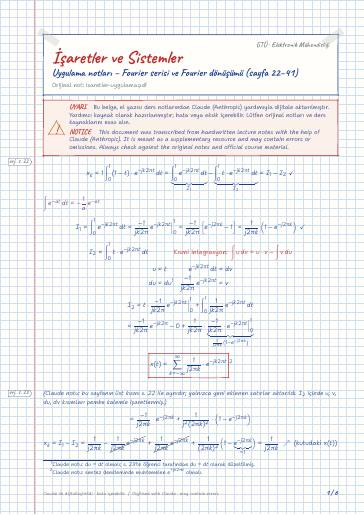

İşaretler ve Sistemler · Dijital ders notu
Uygulama notları – Fourier serisi ve Fourier dönüşümü (sayfa 22–41)
- Ders
- İşaretler ve Sistemler (ELM264)
- Dönem
- 4. Dönem · 2022–2023 Bahar
- Biçim
- PDF · 6 sayfa · 0,1 MB · el yazısı görünümlü LaTeX
- Orijinal not
- isaretler-uygulama.pdf

The digital notes were created from the handwritten notes with the help of Claude (Anthropic); they are meant as a supplementary resource and may contain errors. Always rely on the original notes and the official course materials.
Notun metni
Düz metin olarak göster (formüller ve çizimler yoktur)
(Claude notu: bu sayfanın üst kısmı s. 22 ile aynıdır; yalnızca yeni eklenen satırlar aktarıldı. I_2 içinde u , v , du , dv kısımları pembe kalemle işaretlenmiş.)
[1][baseline=(gtuIptal.base)][inner sep=1pt](gtuIptal) #1 ;
[kursunkalem,line width=0.6pt] (gtuIptal.south west) – (gtuIptal.north east);
(Claude notu: s. 23 ile aynı sayfa. Pembe kalemle eklenenler: üstteki `` = -1j2π ke^-j2π k + … '' satırı I_2 olarak etiketlenip ile onaylanmış, sadeleşen iki terimin üstü çizilmiş ve e^-j2π k daire içine alınmış.)
Aşağıda verilen periyodik işaretin Fourier serisi açılımını bulunuz.
Claude notu: paydadaki t muhtemelen fazladan yazılmış; -1jkπT olmalı (bir sonraki satırda da öyle kullanılmış).
(Claude notu: s. 26 ile aynı sayfa; kırmızı e^± jπ n = (-1)^n ifadeleri kutu içine alınmış, e^ jπ k ve (-1)^k terimlerinin altı çizilmiş. Pembe kalemle eklenenler:)
(Claude notu: s. 28 ile aynı sayfa; FT tanımı kutu içine alınıp ile, sonuç da ile işaretlenmiş. Pembe kalemle eklenenler:)
x(t) = (2t+3) + (3t-2) işaretinin Fourier transformunu bulunuz.
(Claude notu: s. 30 ile aynı sayfa; (2t+3) daire içine, ilk dönüşüm sonucu kutu içine alınmış. Pembe kalemle eklenenler:)
işaretinin fourier transformunu bulunuz.
(Claude notu: s. 32 ile aynı sayfa; sorudaki x(t) etiketi bu sayfada tamamlanmış, sonuç ile onaylanmış. Pembe kalemle eklenenler:)
x(t) = 11+t^2 Find the Fourier Transform.
(Claude notu: s. 34 ile aynı sayfa; duality çifti yeşil kutu içine alınmış, ``Fourier Transform'' altı çizilmiş. Yeşil/pembe kalemle eklenenler:)
(Claude notu: s. 34'teki sayfanın başka bir açıklamalı hâli; s. 35'teki Y(t)=1πx(t) eklemeleri bu sayfada yok. çifti yeşil kutuya alınmış, iki tarafı pembe daire içinde; x(-f) altı çizilmiş. Pembe kalemle eklenenler:)
(Claude notu: s. 32–33'teki sayfanın alt kısmı; yatay pembe çizginin altı. Bu bölüm çoğunlukla pembe kalemle yazılmış.)
El yazısı eklemeler:
(Claude notu: s. 39 ile aynı basılı soru. Öğrenci ``Lineer değildir'' içeren iki şıkkı karalamış, son şıkkı (Lineer, zamanla değişir) daire içine alıp ``Lineer'' ve ``zamanla değişir'' kısımlarını ile işaretlemiş; y(t) = t^2· x(t-1) altı çizilmiş. Yeni el yazısı eklemeler:)
El yazısı eklemeler: